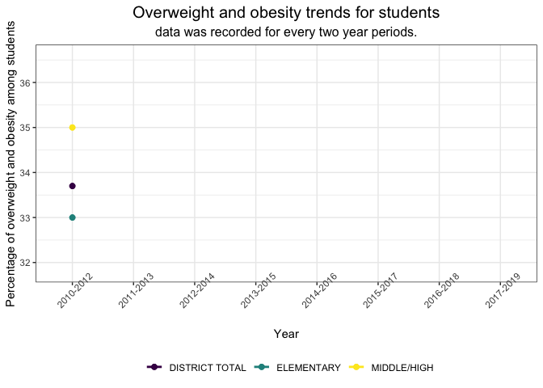

Overweight and obesity percentage trends for students from 2010 to 2019 in NY
From the plot that shows the percentage of students’ overweight and obese weight status, we can see that middle and high school students’ overweight percentage keeps increasing over the ten-year time period. Elementary school students’ overweight percentage is showing an overall decreasing trend. By looking at all grade levels, we can see that the change of overweight and obese rate is small, basically is staying around 34%.

Overweight and obesity trends for students categorized by gender from 2010 to 2019 in NY
This graph shows the changing percentages, we can see that the percentage of overweight and obese female students shows an overall increasing trend over the ten-year period. In contrast, the percentage of overweight and obese male students shows an overall decreasing trend over the ten-year period. From 2010-2013, both females and males have same pattern of change. After that, their trend changes in a negative direction.

This graph shows the number of overweight and obese students in New York State. Overall, we can see that both genders are showing an increasing trend. It is interesting that their trends show similar variations.

Overweight percentages compared to obesity percentages for students by age from 2010 to 2019 in NY
By analyzing this graph, we can see that the percentage of obesity among students is always higher than the percentage of overweight. The variance between overweight and obese students is notably smaller in elementary school.

Percentage and number of healthy students by county over ten years
From this interactive graph, we can see the percentage and number of students who have a healthy weight in each county of New York state. Since some of the areas were not monitored every year and have missing values, this graph shows the trends using a two year interval.
Comparison of overweight or obese percentages in the top 20 counties
It is also interesting to see the ranking of counties that have highest overweight and obesity percentages among students. This graph shows the changes in ranking of the top 20 counties that have the highest overweight and obesity mean percentages in New York state during a ten year period. Some counties have the same percentage in given years, so their bars coincide.
| County | Mean percentage |
|---|---|
| CATTARAUGUS | 37.1750 |
| CAYUGA | 37.3250 |
| CHEMUNG | 38.8125 |
| CHENANGO | 38.9125 |
| CLINTON | 38.7375 |
| CORTLAND | 37.3750 |
| ESSEX | 37.7000 |
| FRANKLIN | 40.2500 |
| GREENE | 38.3750 |
| JEFFERSON | 36.9625 |
| LEWIS | 40.0625 |
| ORLEANS | 38.9875 |
| OSWEGO | 40.9250 |
| ST. LAWRENCE | 40.2000 |
| SCHOHARIE | 37.1125 |
| SENECA | 39.3000 |
| SULLIVAN | 38.9875 |
| WASHINGTON | 38.6500 |
| WAYNE | 36.9875 |
| YATES | 38.8750 |

This project works by Yilin (Elaine) Xu, Rio Yan, Jiayi Zhou, and Ximeng Zhao
Visualizations and analyses performed using R (v4.0.2) and RStudio (v1.3.1073).
Additional interactivity added using plotly and Shiny.
Click here to see details of this project.
2020 | Powered by Github.io